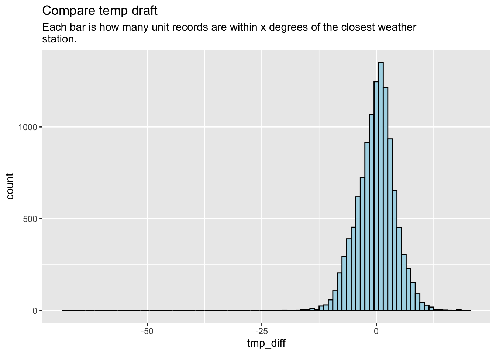
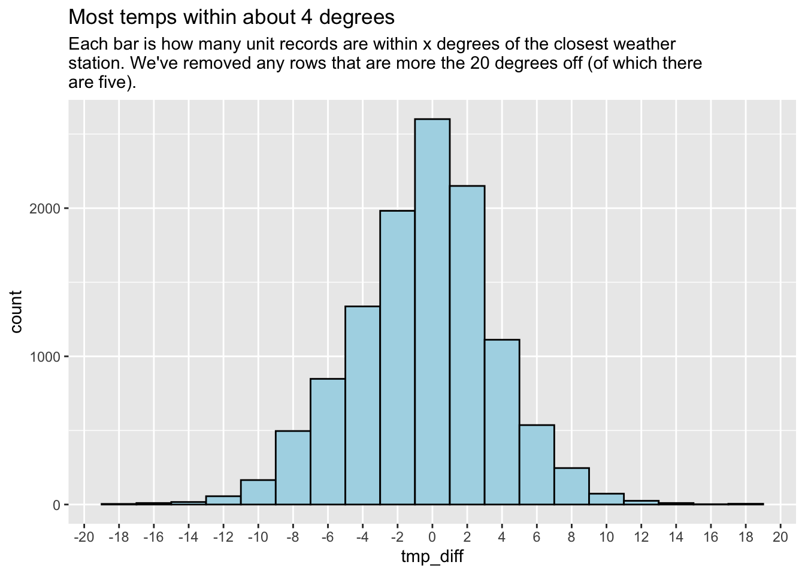
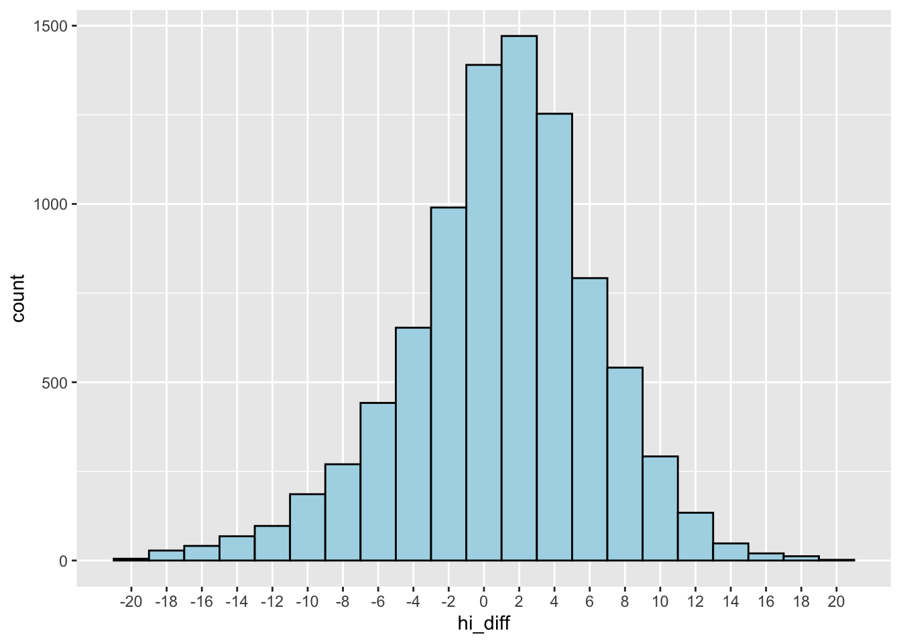

Expand this to see code
library(tidyverse)
library(janitor)
library(scales)
library(DT)Answering protocol questions will be tricky because we only have that one week of data and it takes three days of meeting the protocol to enact it.
library(tidyverse)
library(janitor)
library(scales)
library(DT)We’re bringing in:
logs_all <- read_rds("data-processed/01-outdoor-cleaned.rds")
activations <- read_rds("data-processed/01-activation-cleaned.rds")
hourly <- read_rds("data-processed/01-station-hourly-protocols.rds")
units <- read_rds("data-processed/01-unit-info-cleaned.rds")We’ll remove July 24th so we have the last seven days of July, 2023.
logs <- logs_all |> filter(date != "2023-07-24")
logs |> count(date) |> adorn_totals() |> tibble()Here we bring in the unit info and hourly logs.
# getting station from units
logs_expanded <- logs |>
left_join(units, by = join_by(unit == unit_name, region)) |>
# removing some unneeded cols
select(!c(unit_code, type, county, nws))
# joining to get weather info
logs_nws <- logs_expanded |>
left_join(hourly, by = join_by(nws_id == station_id, date == date, hour == hr))
logs_expanded |> filter(str_detect(unit, "Jordan"))Here we find the percentage of records with no NWS data.
match_checks <- logs_nws |>
mutate(match_null = if_else(is.na(name), T, F))
match_checks |>
tabyl(match_null) |>
adorn_pct_formatting()About 15 percent of our hourly logs don’t have a station match. Here TRUE values means there is missing station data.
Let’s take a look at which ones are at issue:
match_checks |>
tabyl(unit, match_null) |>
adorn_percentages() |>
adorn_pct_formatting() |>
adorn_ns() |>
tibble()In some cases we didn’t have a prison close enough. In other cases – like Jordan – we had a station, but there were no recordings for the time period.
Here is a filtered list to more easily see units that have no NWS readings:
no_compare <- match_checks |>
tabyl(unit, match_null) |>
filter(`TRUE` == 168) |>
tibble()
no_compareWe’re going to remove these units going forward, leaving us with 71 units.
no_compare_units <- no_compare |> pull(unit)
logs_nws_compare <- logs_nws |>
filter(!unit %in% no_compare_units)
logs_nws_compare |> count(unit) |> nrow()We don’t have a matching weather station for 11 of the 82 unites. Using visualcrossing we might be able to do a better job finding weather stations, and also to keep a better record of how far away these stations are from the units. We will do this, but later.
We’ll attempt here to determine if heat protocols thresholds were met at different prisons each day, according to their own readings.
In this case we’ll start with all 8 days of readings that we have. That is still tricky as we protocols go into place only when the threshold is met for 3 consecutive days.
First, we need to find the hottest temp and heat index for each day in each unit according to their logs. There are some warnings here because some values are blank and can’t calculat properly. They become -Inf which is treated similar to NA for our purposes.
logs_daily_sums <- logs_all |>
group_by(unit, date) |>
summarize(
u_cnt = n(),
u_max_tmp = max(temp, na.rm = T),
u_max_hi = max(hi_wc, na.rm = T),
.groups = "drop"
)Warning: There were 22 warnings in `summarize()`.
The first warning was:
ℹ In argument: `u_max_hi = max(hi_wc, na.rm = T)`.
ℹ In group 81: `unit = "Dalhart"` and `date = 2023-07-24`.
Caused by warning in `max()`:
! no non-missing arguments to max; returning -Inf
ℹ Run `dplyr::last_dplyr_warnings()` to see the 21 remaining warnings.logs_daily_sums |> head()Then we add the protocol calculations. We are viewing a sample here.
logs_daily_sums_flags <- logs_daily_sums |>
mutate(
u_tmp_flag = (case_when(
u_max_tmp >= 105 ~ TRUE,
.default = FALSE)),
u_hi_flag = (case_when(
u_max_hi >= 113 ~ TRUE,
.default = FALSE)),
u_protocol_flag = case_when(
u_tmp_flag == "TRUE" | u_hi_flag == "TRUE" ~ TRUE,
.default = FALSE),
)
logs_daily_sums_flags |> slice_sample(n = 5)I wanted to check if when we have -Inf as a value if the protocol flag works correctly, but there weren’t any records where the heat index is missing but the temp was 105.
logs_daily_sums_flags |> filter(is.infinite(u_max_hi))OK now we add whether a protocol was active on a given day at a prison, for comparison.
We need to remember that meeting the protocol_flag DOES NOT put a prison in protocol. The flag conditions have to exist for three days for them to go into affect. (While we could calculate the run of days with the data we have, we only have 8 days so it would not be accurate for the first two days.)
logs_flags_activations <- logs_daily_sums_flags |>
left_join(activations, by = join_by(unit, date)) |>
mutate(protocol_active = if_else(is.na(protocol_active), F, protocol_active))
logs_flags_activations_unit <- logs_flags_activations |>
group_by(unit) |>
summarise(
flag_yes_active_no = sum(u_protocol_flag == T & protocol_active == F),
flag_yes_active_yes = sum(u_protocol_flag == T & protocol_active == T)
)
logs_flags_activations_unitHow many units have three or more days with the flag, but not be in protocol? (Remember they have to be a run of three.)
logs_flags_activations_unit |>
filter(flag_yes_active_no >= 3) |>
arrange(desc(flag_yes_active_no))peek_cols <- c("unit", "date", "u_max_tmp", "u_max_hi", "u_protocol_flag", "protocol_active")For Young, the heat index is flipping the flag, though the temperatures are at or below 100. All 8 days have the flag, so the protocol should’ve been put into place.
logs_flags_activations |> filter(unit == "Young") |> select(all_of(peek_cols))Let’s check Havins it did have activiation in the first of our dates, and the remaining dates should’ve also kept protocols based on temperature.
logs_flags_activations |> filter(unit == "Havins") |> select(all_of(peek_cols))For Plane, there were some pretty hot days and high heat indexes, including four flags in a row.
logs_flags_activations |> filter(unit == "Plane") |> select(all_of(peek_cols))Allred had 6 out of 8 days reach protocol levels, but not go into protocol?
In this case it did not reach three days in a row until the end of the 8 days, so perhaps protocols when into place the next day?
logs_flags_activations |> filter(unit == "Allred") |> select(all_of(peek_cols))We must remeber these weather stations may be up to 40 miles away from the unit.
Here we find the difference in the prison recorded temp and heat index compared to the nearest station, if we have one. In some cases the diffs are NA because we don’t have a nearby station, or one of the calculating numbers is missing for whatever reason.
We only do this heat index calculation if one of the temperatures if above 80 degrees, because heat indexes get wonky when it is below 80.
logs_diffs <- logs_nws_compare |>
mutate(
tmp_diff = temp - tmp,
hi_diff = case_when(
temp >= 80 | tmp >= 80 ~ hi_wc - hi,
.default = NA
)
)
logs_diffs |> slice_sample(n = 20)Here we look across the dataset at the diff_tmp (unit temperature - weather staiton temperaure).
logs_diffs |>
summarise(
max_tmp_diff = max(tmp_diff, na.rm = T),
avg_tmp_diff = (mean(tmp_diff, na.rm = T) * 100) |> round(1),
med_tmp_diff = median(tmp_diff, na.rm = T)
)Let’s do a quick plot of these to see how the are distributed. i.e., how many rows are within x degrees of the weather station temperature. Note: there are 248 blank rows where we could not determine the difference because of a missing value.
ggplot(logs_diffs, aes(x = tmp_diff)) +
geom_histogram(binwidth = 1, fill = "lightblue", color = "black") +
labs(
title = "Compare temp draft",
subtitle = str_wrap("Each bar is how many unit records are within x degrees of the closest weather station."))Warning: Removed 248 rows containing non-finite outside the scale range
(`stat_bin()`).
I can see that there are a just a couple of outliers Let’s consider removing those and see the spread mo betta.
There are only five records (out of 11,928) where the temp is 20 or more degrees off.
# the outliers
logs_diffs |>
filter(abs(tmp_diff) >= 20)# chart it
logs_diffs |>
filter(abs(tmp_diff) < 20) |>
ggplot() +
aes(x = tmp_diff) +
geom_histogram(binwidth = 2, fill = "lightblue", color = "black") +
scale_x_continuous(breaks = seq(-20, 20, 2)) +
theme(panel.grid.minor.x = element_blank()) +
labs(
title = "Most temps within about 4 degrees",
subtitle = str_wrap("Each bar is how many unit records are within x degrees of the closest weather station. We've removed any rows that are more the 20 degrees off (of which there are five).")
)
How many rows negative vs positive?
logs_diffs |> filter(tmp_diff <= 0) |> nrow() # unit is lower[1] 6158logs_diffs |> filter(tmp_diff > 0) |> nrow() # unit is higher[1] 5522This might be too technical or unneeded, but let’s look at this using the standard deviation. The standard deviation describes how much the values in the dataset typically vary from the mean (average). Like how whacked are they.
# The standard deviation of tmp_diff
# logs_diffs |> summarise(td_sd = sd(tmp_diff, na.rm = T))
tmp_diff_sd <-
logs_diffs |>
filter(abs(tmp_diff) < 20) |>
pull(tmp_diff) |> sd(na.rm = T)
tmp_diff_sd[1] 4.084984# percent outside the sd
logs_diffs |>
filter(abs(tmp_diff) < 20) |>
mutate(
td_sd_out = case_when(
abs(tmp_diff) > tmp_diff_sd ~ T,
.default = F
)
) |>
tabyl(td_sd_out) |>
adorn_pct_formatting()Here about 1/4 of the rows are outside the standard deviation.
This might make more sense to a human: What percentage of the overall records fall within 2 degrees of the nearest weather station. How about within 4 degrees?
We are NOT removing outliers here.
The TRUE value here is the percentage of records within 2 or 4 degrees, respectively. To be clear, within 4 degrees also includes those within 2 degrees.
tmp_diff_2_4 <- logs_diffs |>
# filter(abs(tmp_diff) < 20) |>
filter(!is.na(tmp_diff)) |>
mutate(in_2d = abs(tmp_diff) <= 2,
in_4d = abs(tmp_diff) <= 4)
tmp_diff_2_4 |>
tabyl(in_2d) |>
adorn_pct_formatting()tmp_diff_2_4 |>
tabyl(in_4d) |>
adorn_pct_formatting()Now that seems easier to understand than standard deviation.
Let’s see how this differs by unit.
in_2d_prc is the percentage of records for that unit within 2 degrees the closest weather station. in_4d_prc is the same for within 4 degrees.
tmp_diff_2_4 |>
group_by(unit) |>
summarize(
cnt = n(),
in_2d_true = sum(in_2d == T),
in_2d_prc = ((in_2d_true / cnt) * 100) |> round(1),
in_4d_true = sum(in_4d == T),
in_4d_prc = ((in_4d_true / cnt) * 100) |> round(1)
) |>
# removes the cnt true rows from display
select(unit, ends_with("prc")) |>
arrange(in_2d_prc)Sorted above based on lowest percentage within 2 degrees.
Now, these numbers could really depend on how close the weather station is to the unit. For instance, I’m not happy with the choice of a station at Pearland Regional Airport for the Ramsey unit (maybe 30 miles?). The Angleton/Brazoria airport is closer (13 miles), as is Houston Southwest Airport (14 miles).
We will check all the weather stations and add distance between unit and weather station at a future date.
Let’s do the same for heat index. We’ll skip the standard deviations and just look at the distribution and percentages.
There are about 50 records outside a 20 degree difference that we show here, but remove for the plot.
logs_diffs |>
filter(abs(hi_diff) >= 20)logs_diffs |>
filter(abs(hi_diff) < 20) |>
ggplot() +
aes(x = hi_diff) +
geom_histogram(binwidth = 2, fill = "lightblue", color = "black") +
scale_x_continuous(breaks = seq(-20, 20, 2)) +
theme(panel.grid.minor.x = element_blank())
Here we find the percentage of heat index records within 2 or 4 degrees. We are NOT removing outliers here.
TRUE means within 2 or 4 degrees, respectively.
hi_diff_2_4 <- logs_diffs |>
filter(!is.na(hi_diff)) |>
mutate(in_2d = abs(hi_diff) <= 2,
in_4d = abs(hi_diff) <= 4)
hi_diff_2_4 |>
tabyl(in_2d) |>
adorn_pct_formatting()hi_diff_2_4 |>
tabyl(in_4d) |>
adorn_pct_formatting()And now to do that by unit. We have more cases where we don’t have the heat index for both the unit and the weather station, so we include the count of records we are comparing here.
hi_diff_2_4 |>
group_by(unit) |>
summarize(
cnt = n(),
in_2d_true = sum(in_2d == T),
in_2d_prc = ((in_2d_true / cnt) * 100) |> round(1),
in_4d_true = sum(in_4d == T),
in_4d_prc = ((in_4d_true / cnt) * 100) |> round(1)
) |>
# removes the cnt true rows from display
select(unit, cnt, ends_with("prc")) |>
arrange(in_2d_prc)